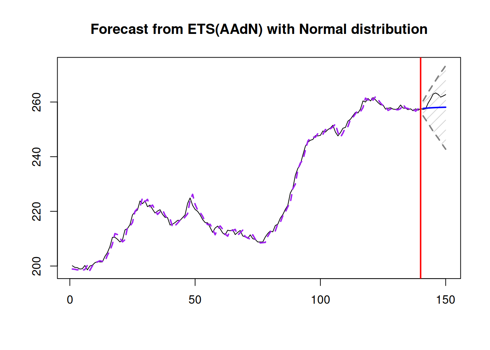
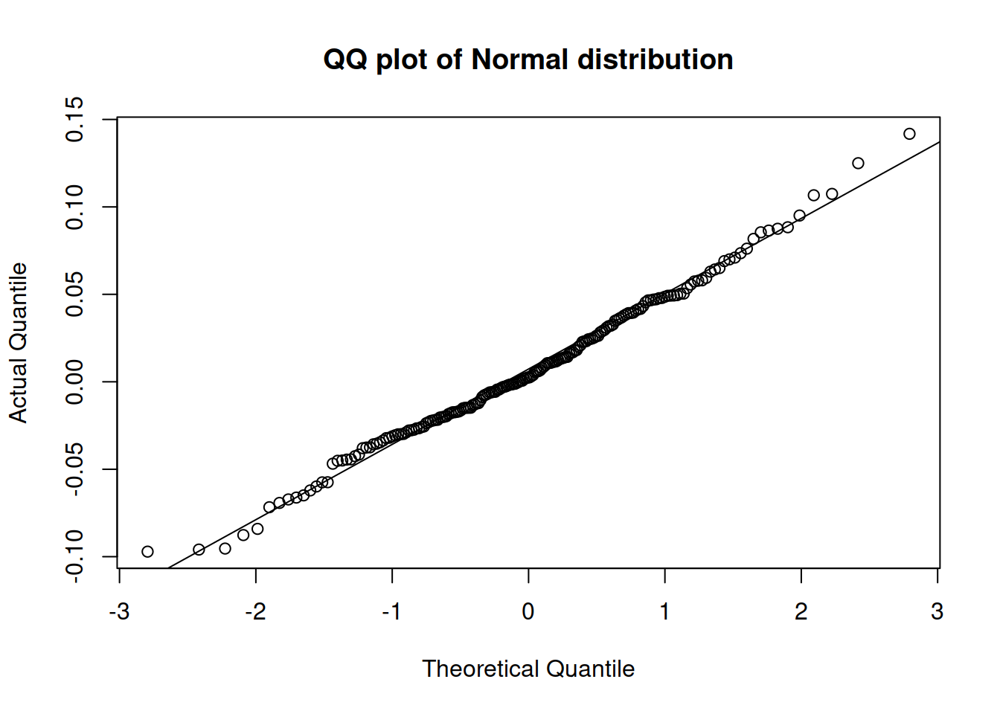
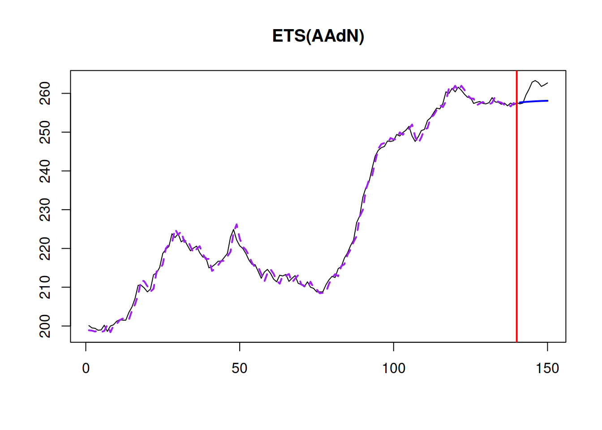
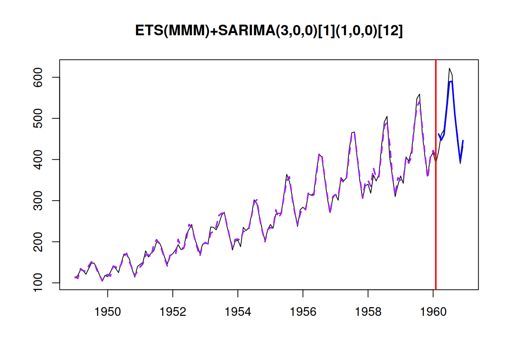

14.6 Residuals are i.i.d.: heteroscedasticity
Another important assumption for conventional models is that the residuals are homoscedastic, meaning that the variance of the residuals stays the same (no matter what). In this section we will see how the issue can be resolved in some cases.
14.6.1 Detecting heteroscedasticity
Building upon our previous example. We will use the ETSX(A,N,A) model, which as we remember has some issues. In order to see if the residuals of the model are homoscedastic, we can plot their values against the fitted:
par(mfcol=c(1,2))
plot(adamModelSeat03,4:5)
These two plots allow detecting specific type of heteroscedasticity, when with the increase of fitted values the residuals variability changes. The plot of absolute residuals vs fitted is more appropriate for models, where the scale parameters is calculated based on absolute values of residuals (e.g. the model with Laplace distribution), while the squared residuals vs fitted shows whether the variance of residuals is stable or not (thus making it more suitable for models with Normal and related distributions). Furthermore, the squared residuals plot might be difficult to read due to outliers, so the first one might help in detecting the heteroscedasticity even, when the scale is supposed to rely on squared errors. What we want to see on these plots, is for all the points to lie in the same corridor for lower and for the higher fitted values and for the red line to be constant. In our case There is a slight increase of the line and the variability of residuals around 1000 is lower than the one around 2000, which might indicate that we have heteroscedasticity in residuals. In our case this is cause by the wrong transformations in the model (see Section 14.3), so the fix of the issue is to use the multiplicative model.
Another diagnostics tool that might become useful in some situations are the plot of absolute and squared standardised residuals versus fitted values. They have a similar idea to the previous plots, but they might change a little because of the standardisation (mean is equal to 0 and scale is equal to 1). These plots become especially useful if the changing variance is modelled explicitly (e.g. via a regression model or a GARCH-type of model. This feature is not yet supported in ADAM):
par(mfcol=c(1,2))
plot(adamModelSeat03,13:14)
In our case, these plots do not give additional message, we already know that there is a slight heteroscedasticity and that we need to transform the response variable some how (build multiplicative model).
If we suspect that there are some specific variables that might cause heteroscedasticity, we can plot absolute or squared residuals vs these variables to see if they are indeed to blame for that. For example, here how we can produce a basic plot of residuals vs all explanatory variables included in the model:
spread(cbind(as.data.frame(abs(resid(adamModelSeat03))),
adamModelSeat03$data[,all.vars(formula(adamModelSeat03))[-1]]),
lowess=TRUE)
The plot above can be read similarly to the plots discussed above: if we notice a change in variability of residuals or a change (increase of decrease) in the lowess lines with the change of a variable, then this might indicate that the respective variable causes multicollinearity in the model. In our example, it looks like the variable law causes the largest issue - all the other variables do not cause as a strong change in variance. We already know that we need to use multiplicative model instead of the additive one in our example, so we will see how the residuals look for the correctly specified model:
par(mfcol=c(1,2))
plot(adamModelSeat05,4:5)
The plots above do not demonstrate any substantial issues: the residuals look more homoscedastic and given the scale of residuals the change of lowess line does not reflect significant changes in residuals. Additional plot of absolute residuals vs explanatory variables does not show anys serious issues either:
spread(cbind(as.data.frame(abs(log(resid(adamModelSeat05)))),
adamModelSeat05$data[,all.vars(formula(adamModelSeat05))[-1]]),
lowess=TRUE)
So, we can conclude that the multiplicative model resolves the issue with heteroscedasticity. If a variable would still cause an issue with it, it would make sense to construct a model for the variance (e.g. GARCH) in order to address the issue and improve the performance of the model in terms of prediction interval.
There are formal statistical tests for heteroscedasticity, such as White (Wikipedia, 2021i), Breusch-Pagan (Wikipedia, 2021j) and Bartlett’s (Wikipedia, 2021k) tests. We do not discuss them here for the reason outlined in Section 14.5.